# numerical calculation & data frames
import numpy as np
import pandas as pd
# visualization
import matplotlib.pyplot as plt
import seaborn as sns
import seaborn.objects as so
# statistics
import statsmodels.api as sm
# pandas options
pd.options.display.precision = 2
pd.options.display.float_format = '{:.2f}'.format # pd.reset_option('display.float_format')
pd.options.display.max_rows = 8
# pd.set_option("mode.copy_on_write", True) # pandas 2.0.0Midterm
총점 215
D. 데이터 분석에 대해서, 예측 모델과 인과분석 및 데이터 수집의 한계성 등을 고려하여 간략하게 다음에 답해보세요. (20)
- 아래 내용은 모두 가상의 시나리오이며 실제와는 다릅니다.
애플은 자사의 애플 워치라는 몸에 착용하는 디바이스를 통해 생체정보를 수집하여, 고객에게 유용한 정보를 제공하고자 하는 프로젝트를 세웠습니다. 이를 위해 고객에게 생체정보 수집에 대한 동의를 구하는 절차를 통해 동의를 얻은 고객에 한해 정보를 사용하기로 하였습니다. 이를 통해 얻은 데이터의 분석 결과에 대해 비판적 관점을 갖고,
D-1. 그 분석 내용들의 잠재적 문제점들을 제시해 보고, (10)
D-2. 그러한 문제점들에도 불구하고 그 분석 결과가 어떻게 고객들에게 유용하게 쓰여질 수 있는지 대해서도 제시해 보십시요. (10)
A. 다음은 어느 웨이터의 팁에 관한 tips 데이터를 이용한 질문입니다.
- total_bill: 음식값 (달러)
- tip: 팁 (달러)
- sex: 팁을 준 사람의 성별
- smoker: 테이블에 흡연자 유무
- day: 요일
- time: 점심/저녁 시간
- size: 테이블의 손님 수
# load a dataset
tips = sns.load_dataset("tips")A-1. 점심, 저녁 때에 따른 식사비와 팁의 관계를 알아보기 위해 다음과 같은 시각화를 위한 코드를 짜보세요. (5)
- fitted line은 3차 다항함수로 fit 시키세요.
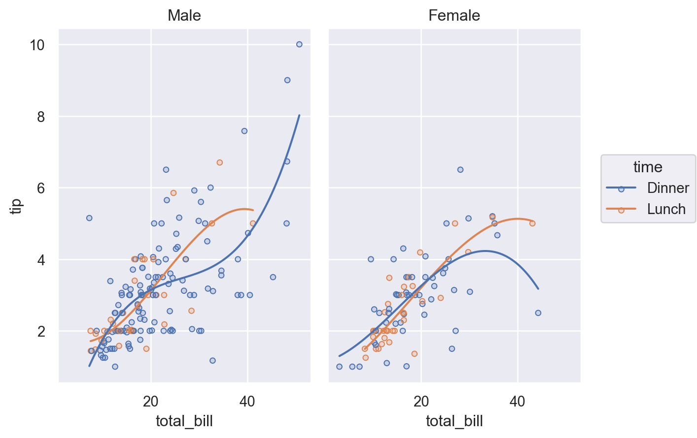
A-2. 요일에 따른 팁의 분포를 보기 위한 다음과 같은 시각화를 위한 코드를 짜보세요. (10)
binwidth는 0.5로 설정하세요.- y축은 팁의 비율(
proportion)로 표시하세요. common_norm을 이용하여, 각 요일 내에서의 비율이 되도록 하세요.
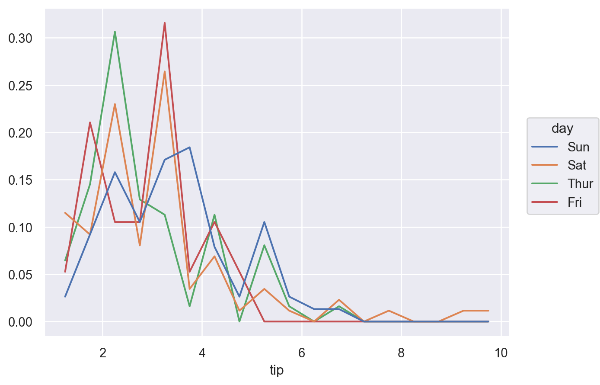
A-3. 요일에 따른 팁의 분포가 성별과 흡연자 유무에 따라 다른가를 보기 위한 다음과 같은 시각화를 위한 코드를 짜보세요. (10)
- 디테일은 무시하시고, medain과 25%, 75% quantile range가 표시되도록 하세요.
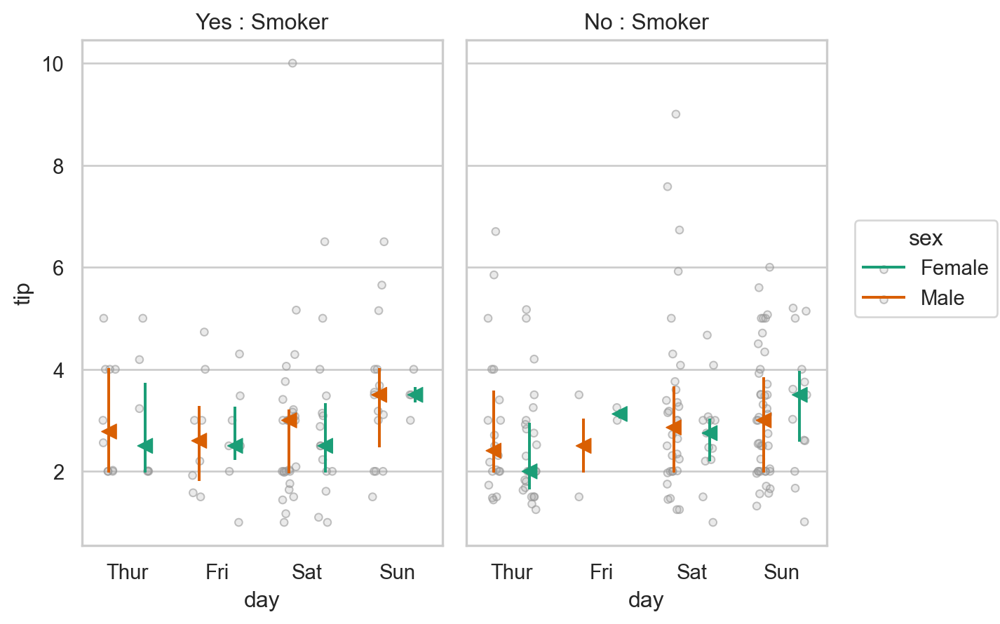
A-4. 요일에 따른 팁의 평균(mean), 중앙값(median), 값의 개수(count)를 함께 보기 위해
1) 요일에 따른 세 통계치를 groupby를 이용해 다음과 같이 DataFrame으로 구한 후, (5)
day mean median count
0 Thur . . .
1 Fri . . .
2 Sat . . .
3 Sun . . .2) (1)의 결과를 이용해 다음과 같이 시각화해보세요. (디테일은 무시) (15)
- median은 붉은 색(
red)으로, mean은 기본색으로 표시하고, 점의 크기에count를 mapping하세요. - 목요일에 median과 mean이 다른 요일에 비해 큰 차이가 나는데 그 의미를 팁을 어떻게 받았을지를 고려해서 기술해보세요.
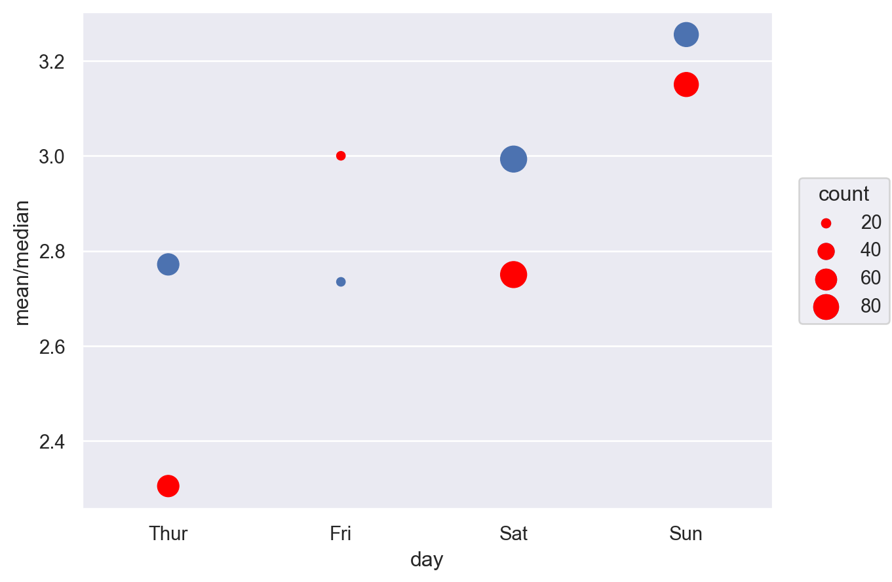
A-5. 웨이터로서 서빙하는 강도가 테이블의 손님 수에 비례한다고 가정합니다. 예를 들어, 1명 손님(table size 1) 테이블을 서빙하는데 비해 5명 손님(table size 5) 테이블을 서빙하는데 5배로 힘들다고 가정합니다. 웨이터가 노동 대비 팁을 최대로 받고자 하는데, 즉, 손님 한명 당 팁을 얼마 받게 되는지를 계산하여 (팁은 실제로 테이블 당 한번 받습니다.) 언제 몇 명의 손님 테이블을 서빙할 때, 노력 대비 최대의 팁을 얻게 될지에 대해서 다음 과정을 통해 분석하고 간단히 결론을 내려보세요. (주말 여부와 점심/저녁 여부에 따라 살펴봅니다.) (20)
1) “주말(토,일) 여부”에 대한 변수와 “한 손님 당 팁”에 해당하는 변수를 추가하고, (5)
(주의: tip.size 사용불가, tip["size"]으로 사용)
# total_bill tip sex smoker day time size weekend tip_per_person
# 0 . . . . . . . . .
# 1 . . . . . . . . .
# 2 . . . . . . . . .
...2) 주말여부, 점심/저녁 여부, 테이블 사이즈의 따른 “한 손님 당 팁”의 평균값을 DataFrame으로 구한 후, (5)
# weekend time size mean_tip_pp
# 0 . . . .
# 1 . . . .
# 2 . . . .
...3) 이를 이용해 대략 다음과 같은 시각화를 해보고 (디테일은 무시), 이 플랏에서 발견되는 패턴에 대해 간단히 언급하고, 결론을 기술해보세요. (10)
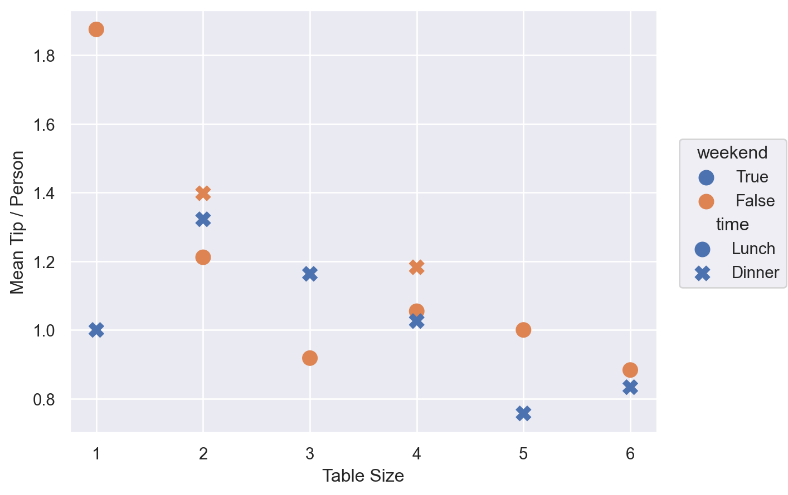
B. 다음은 nycflight13패키지의 데이터셋를 이용한 질문입니다.
데이터셋 다운로드 링크: flights.csv, weather.csv
B-1. 항공사(carrier)별로 몇 편의 항공편이 출항했는지를 크기 순으로 다음과 같이 시각화해보세요. (8)
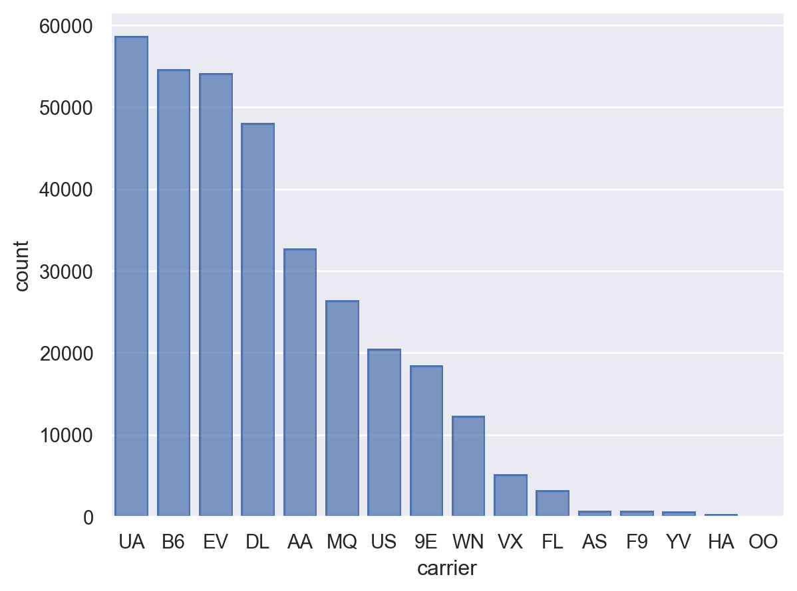
B-2. 위 플랏에서 항공편이 많은 상위 3개의 항공사만로 flights 데이터를 필터링하여, 다음과 같은 것을 알아봅니다.
과제에서 대략 하루 중 오전부터 시간이 지남에 따라 항공편의 지연이 증가하는 것을 보았습니다. 이번에는 항공사별로 시간대(hour)에 따른 도착지연 여부의 비율이 달(month)에 따라 변화하는지를 보고자 합니다.
1) 도착지연 여부를 표시하는 변수를 만든 후, 항공사(carrier), 달(month), 시간(hour)에 따른 도착지연된 항공편의 비율(즉, arr_delay > 0인 항공편의 비율)을 다음과 같은 형태로 구합니다. (10)
# carrier month hour mean_delay_rate
# 0 . . . .
# 1 . . . .
# 2 . . . .
# ... 2) 이를 이용하여, 대략 다음과 같이 column에 달(month), row에 항공사(carrier)를 facet하여 시각화를 구한 후 (디테일은 무시), 눈에 띄는 달과 항공사에 대해 간략히 기술해보세요. (하루 중 시간이 지남에 따라 지연율이 증가하는 경향을 중심으로) (10)
- fitted line은 3차 다항함수로 합니다.
.layout(size=(14, 6))를 추가하여, 플랏의 크기를 조절하세요.
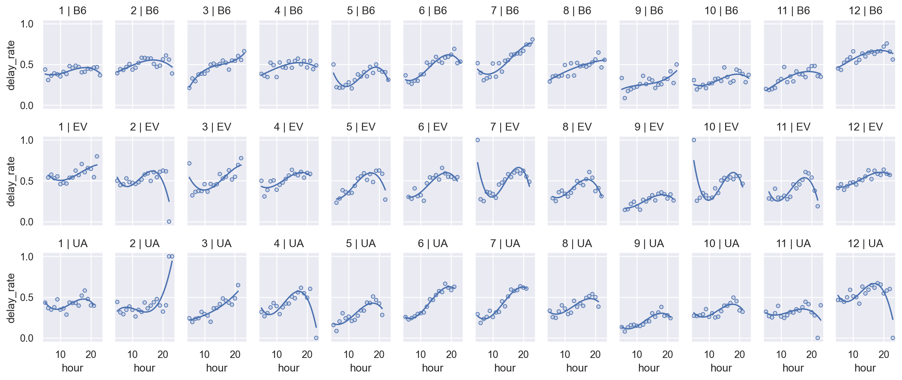
B-3. 출발지연(dep_delay)이 날씨에 의해 얼마나 영향을 받았는지 알아보고자 합니다.
- 우선,
flights와weather데이터를 default인 inner방식으로 merge한 후 진행합니다. dep_delay가 음수인 경우 지연되지 않은 것으로 보고 음수인 값을 모두 0으로 바꿉니다.
1) 바람의 세기(wind_speed)에 따라 평균 출발지연(dep_delay)이 어떻게 변하는지 알아보기 위해, 따로 값을 구하지 않고 seaborn.objects를 직접 이용해 다음과 같은 시각화를 구현해보세요. (디테일은 무시) (10)
so.Agg()를 이용해 평균값이 그려지도록 하고,- 출발지(
origin) 공항에 따라 차이가 있는지 구별하고, - fitted line은 5차 다항함수로 합니다.
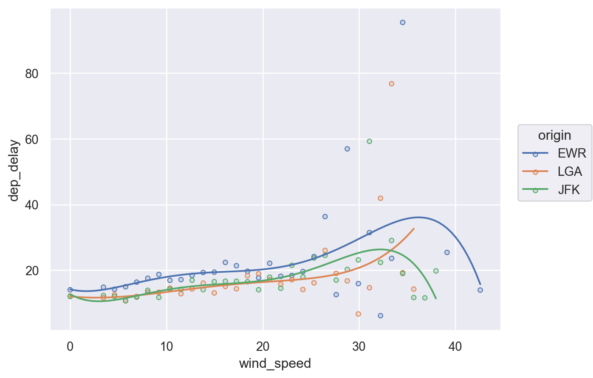
2) 이번에는 강수량(precip)에 따른 평균 출발지연(dep_delay)에 대해 마찬가지로 시각화해보세요. (10)
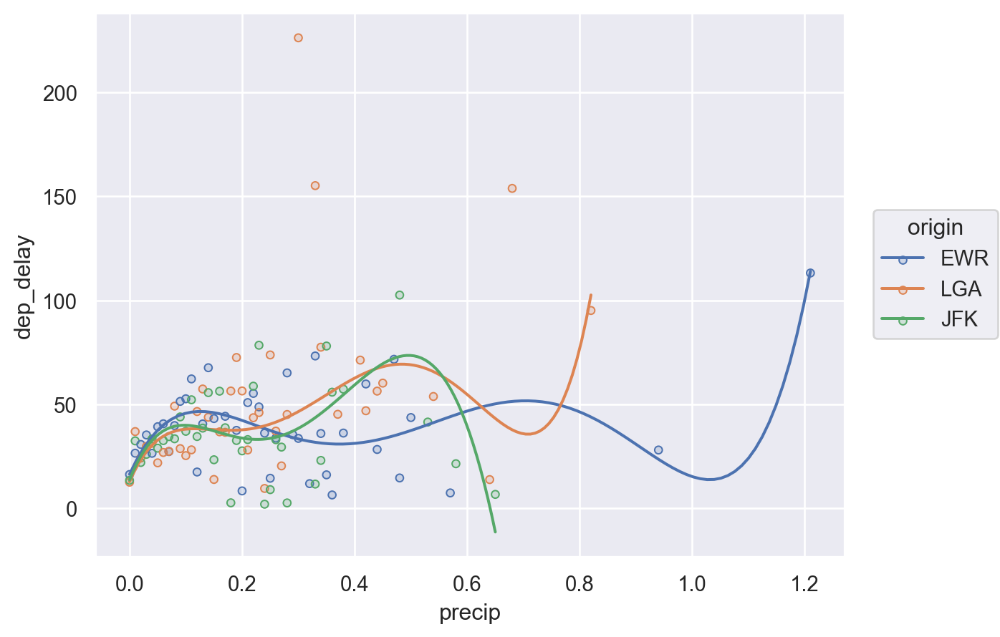
3) (1)번 플랏에서 특이하게 오래 지연된 몇 개의 데이터값이 보입니다. 이들이 여러 날씨 변수들의 안좋은 조합의 결과일 수도 있음을 간단히 확인보는데, (15)
- 여기서는 앞서 알아본 두 날씨 변수, 즉 바람이 세게 불었을 때 비까지 많이 내렸다면 출발지연을 크게 가중시켰는가를 살펴봅니다.
- 문제를 간단히 하기 위해, 강수량(
precip)이 0.3 미만인 경우light로 0.3 이상인 경우heavy로 하는 변수를 만들고, - 이 카테고리 변수를 이용하여 다음과 같이 비가
light하게 온 경우와heavy하게 온 경우를 나누어 볼 수 있도록 시각화를 구현합니다. (디테일은 무시)so.Agg()를 이용해 평균값이 그려지도록 하고,- 출발 공항에 따른 영향은 없는 것으로 보이니 출발지는 구별하지 않고,
- fitted line은 2차 다항함수로 합니다.
- 플랏을 보고, 간단히 이 플랏이 암시하는 바를 기술해보세요.
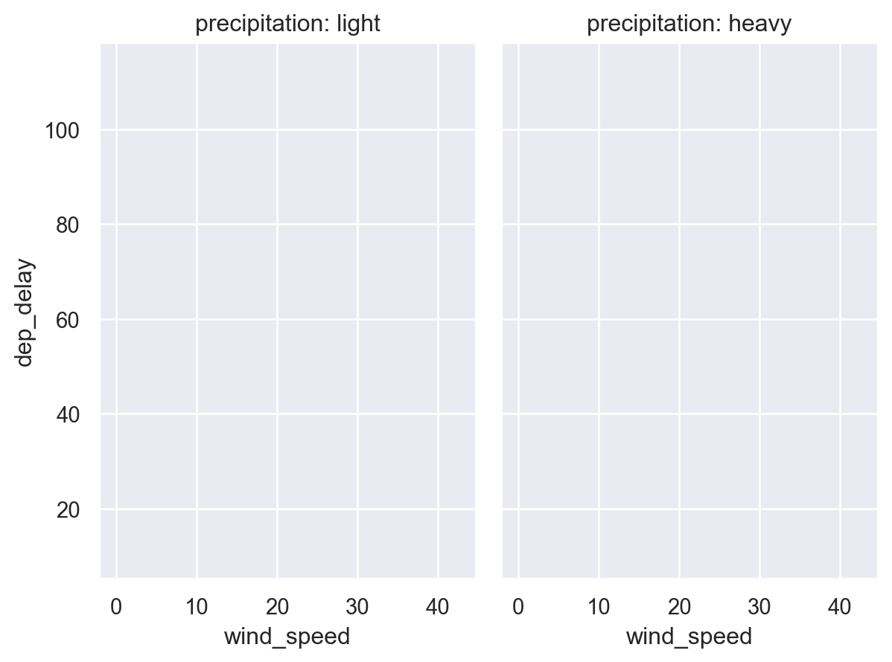
C. 다음은 MovieLens 1M Dataset을 이용한 질문입니다.
데이터셋 다운로드 링크: users.csv, ratings.csv, movies.csv
다음 C-1 ~ C-5를 통해 장르와 성별에 따른 (개인별로 표준화된 평점으로) 평균 최고점을 얻은 영화를 구합니다.
C-1. 우선, ratings 데이터에서 개인별로 몇 개의 영화를 평가했는지를 groupby를 이용해 구한 후, 그 결과를 이용해 다음과 같이 개인별 평가 개수에 대한 분포를 frequency polygon 스타일로 시각화해보세요. (10)
binwidth=5로 하고,- x축의 범위는
.limit(x=(0, 500))으로 제한하세요.
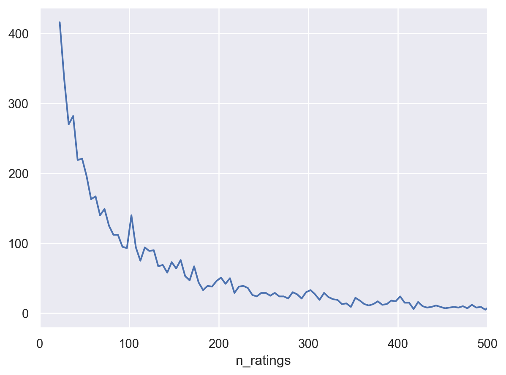
C-2. 과제에서 살펴보았듯이 개인별로 평가에 대한 편향성이 존재합니다. 이를 해결하기 위한 한 방법으로, 개인별로 평점을 표준화해서 이후 진행하려고 합니다. (10)
- 우선, 개인별 표준화를 위해 필요한 최소 평점 개수를 30개로 정하고, C-1을 이용해 평점을 최소 30개 이상 남긴 사람들만으로
ratings데이터를 필터링하고, - 이들의 평점을 개인별 표준화하여
rating_z라는 변수에 추가하여,- 표준화는 평균을 빼고 표준편차로 나누는 것을 말합니다.
- 대략 다음과 같은 테이블을 구합니다. 예를 들어,
user_id1번에게는rating5점이 그 사람의 표준화 점수로는 1.19점에 해당합니다.
user_id movie_id rating timestamp n_ratings rating_z
0 1 1193 5 978300760 53 1.19
1 1 661 3 978302109 53 -1.75
2 1 914 3 978301968 53 -1.75
3 1 3408 4 978300275 53 -0.28
... ... ... ... ... ... ...
982036 6040 1094 5 956704887 341 1.21
982037 6040 562 5 956704746 341 1.21
982038 6040 1096 4 956715648 341 0.36
982039 6040 1097 4 956715569 341 0.36
[982040 rows x 6 columns]C-3. 영화(movie_id)와 성별(gender)에 따른 표준화된 평점(rating_z)의 평균을 구하기 위해
- 우선, C-2의 결과 테이블과
users데이터를 merge하여,user_ratings데이터를 만든 후, groupby를 이용해 표준화된 평점(rating_z)의 평균을 다음 테이블과 같이 구합니다. (10)
# movie_id gender mean_rating_z
# 0 . . .
# 1 . . .
# 2 . . .
# ...C-4. 장르와 성별 내에서 평균 평점이 높은 순으로 순위를 매기기 위해서,
우선,
movies데이터를 다음을 이용해 long format으로 바꾼 후,movies_long = movies.copy() movies_long["genres"] = movies_long["genres"].str.split("|") movies_long = movies_long.explode("genres")이를 C-3의 결과와 merge하고,
장르와 성별에 내에서 “표준화된 평점의 평균”(
mean_rating_z)이 높은 순서대로 순위를 매겨rank라는 변수에 추가하여 다음 형태의 테이블을 구합니다. (10)rank()는min방식으로 적용합니다.
# movie_id gender mean_rating_z title genres rank
# 0 . . . . . .
# 1 . . . . . .
# 2 . . . . . .
# ...C-5. 이제 장르와 성별에 따라 평균 평점이 가장 높은 영화 한편씩을 보여주는 다음과 같은 테이블을 구합니다. (7)
- C-4 테이블에서 순위(
rank)가 1인 영화들만을 추출하여 pivot()을 이용하여, 다음과 같이 장르(genres)별로 성별(gender)이 wide format으로 나타나도록, 그리고 영화제목(title)과 평점(mean_rating_z)이 각각 나타타도록 테이블을 구합니다. (MultiIndex)
title mean_rating_z
gender F M F M
genres
Action . . . .
Adventure . . . .
Animation . . . .
Children's . . . .
... ... .. ... ..
Sci-Fi . . . .
Thriller . . . .
War . . . .
Western . . . .
[18 rows x 4 columns]C-6. 이번에는 장르별 평점의 분포 차이를 살펴보는데,
1) 장르별로 각 평점(1, 2, 3, 4, 5)을 몇 개 얻었는지 다음 테이블과 같이 구합니다. (5)
genres rating n
0 Action 1 .
1 Action 2 .
2 Action 3 .
3 Action 4 .
.. ... ... ..
86 Western 2 .
87 Western 3 .
88 Western 4 .
89 Western 5 .
[90 rows x 3 columns]2) 각 장르 내에서 각 평점이 몇 %를 차지하는지를 다음 테이블과 같이 구합니다. (5)
genres rating n pct
0 Action 1 . .
1 Action 2 . .
2 Action 3 . .
3 Action 4 . .
.. ... ... .. ..
86 Western 2 . .
87 Western 3 . .
88 Western 4 . .
89 Western 5 . .
[90 rows x 4 columns]3) 이를 이용해 대략 다음과 같은 형태로 장르별 평점의 분포를 시각화합니다. (디테일은 무시) (10)
- 평점 5의 비율이 높은 순서대로 정렬되도록 합니다.
- 주의:
rating의 dtype이 float이 아니어야, 5가지의 색(hue)으로 표현됩니다.
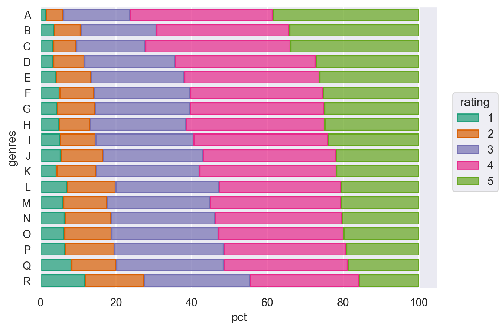
보너스 문제
C-7. 개인별(user_id)로 특정 장르를 편식해서 보는 패턴을 살펴볼 수 있는 테이블과 그 분포를 만들어 보세요. (15)
- 아이디어는 대략 아래 테이블을 구하는 것인데,
- 예를 들어,
user_id2번의 경우,본인이 내린 평점들 중에
Action장르가 차지하는 비중이 19.4% (person_pct)인데 반해,전체 평점 중 Action 장르는 7.8%(
genres_pct)를 차지하고 있어서,그 비율을 보면, 개인적으로 평균보다 19.4/7.8 = 2.48배 더 많은 평점을 내렸습니다. 즉, 평균에 비해 2.48배 더 많이 평가 혹은 시청했다고 볼 수 있습니다.
반대로,
Horror장르는 전체 영화에서 5.4%를 차지하지만 개인적으로는 0.7% 밖에 차지하지 않아 평균에 비해 0.7/5.4 = 0.13, 거꾸로 말하면, 1/0.13 = 7.7배 더 적게 평가 혹은 시청했다고 볼 수 있습니다.# user_id genres n person_pct genres_pct ratio # ... 2 Action 56 0.194 0.078 2.477 # 2 Adventure 19 0.066 0.044 1.494 # 2 Comedy 25 0.087 0.187 0.464 # 2 Crime 12 0.042 0.033 1.265 # 2 Drama 79 0.274 0.250 1.097 # 2 Fantasy 1 0.003 0.011 0.327 # 2 Film-Noir 1 0.003 0.007 0.506 2 Horror 2 0.007 0.054 0.130 # 2 Mystery 3 0.010 0.017 0.630 # 2 Romance 24 0.083 0.074 1.134 # 2 Sci-Fi 17 0.059 0.043 1.370 # 2 Thriller 31 0.108 0.077 1.402 # 2 War 15 0.052 0.022 2.334 # 2 Western 3 0.010 0.011 0.982 # ...
C-8. 위의 테이블에서 ratio의 분포를 장르별로 아래와 같이 그려보고, 1을 중심으로 대칭인 것과 아닌 것, 또한 좌우로 넓게 퍼진 것과 아닌 것이 의미하는 바를 고려해서, 그래프가 의미하는 바를 간략히 기술해보세요. (5)
- x축을 log스케일로 보기 위해,
.scale(x="log")을 이용하고 - 플랏의 사이즈는
.layout(size=(10, 8))을 이용하면 좋습니다.
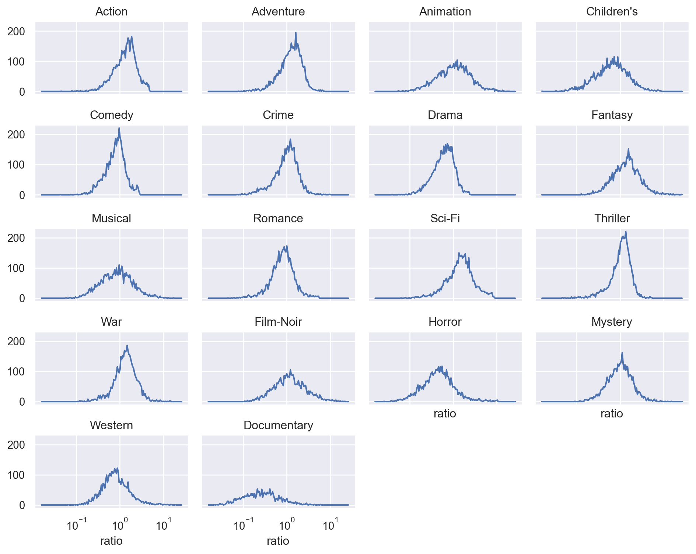